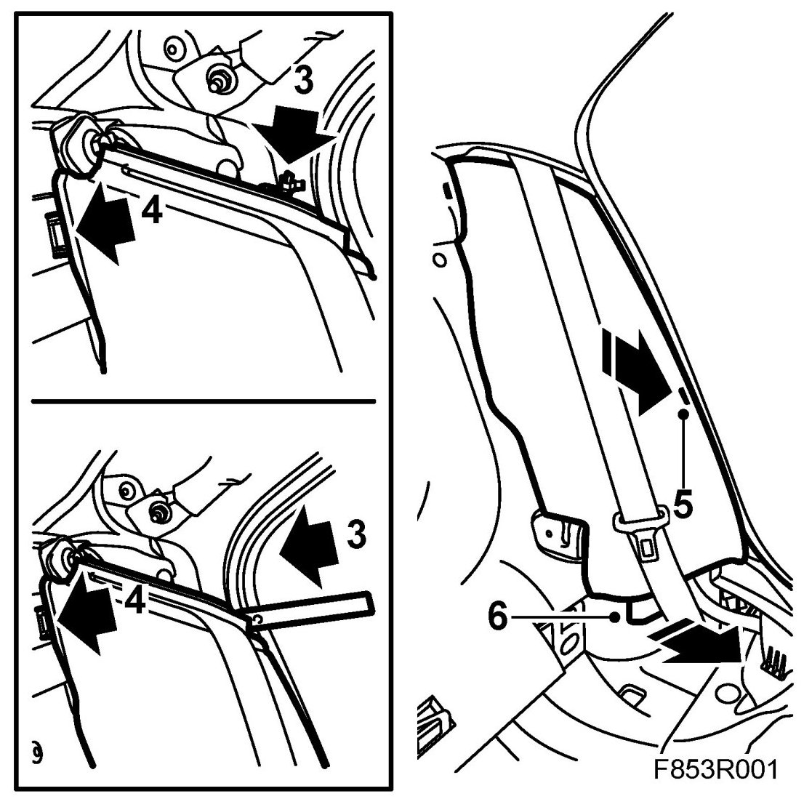
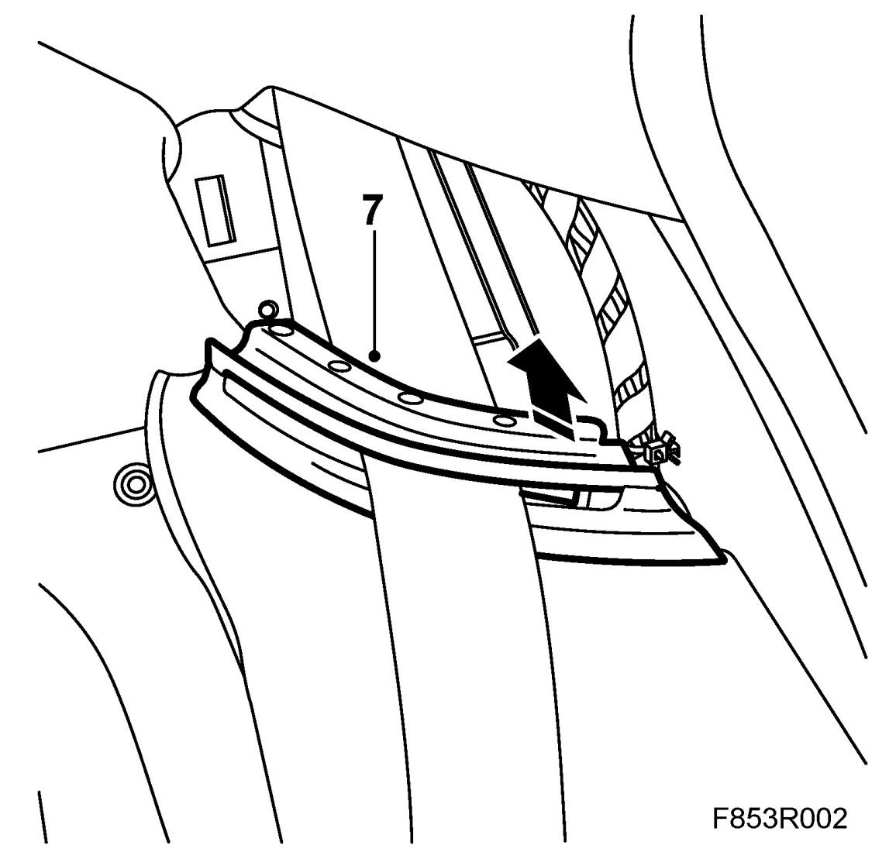
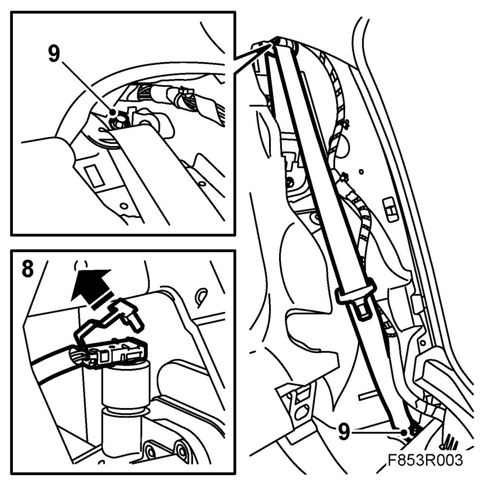
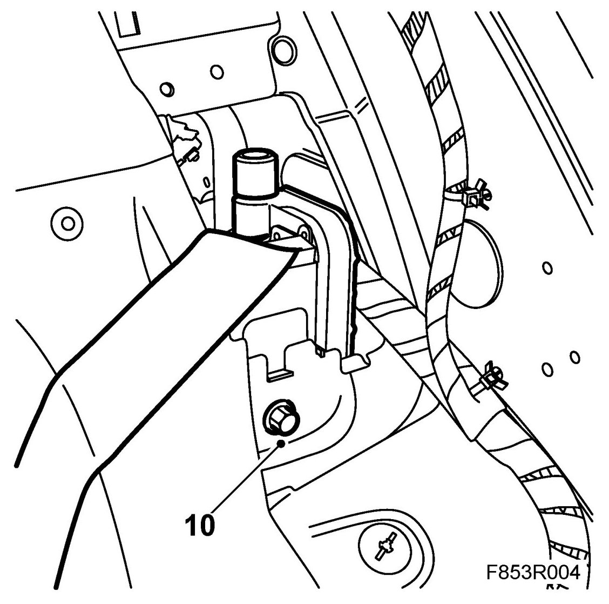
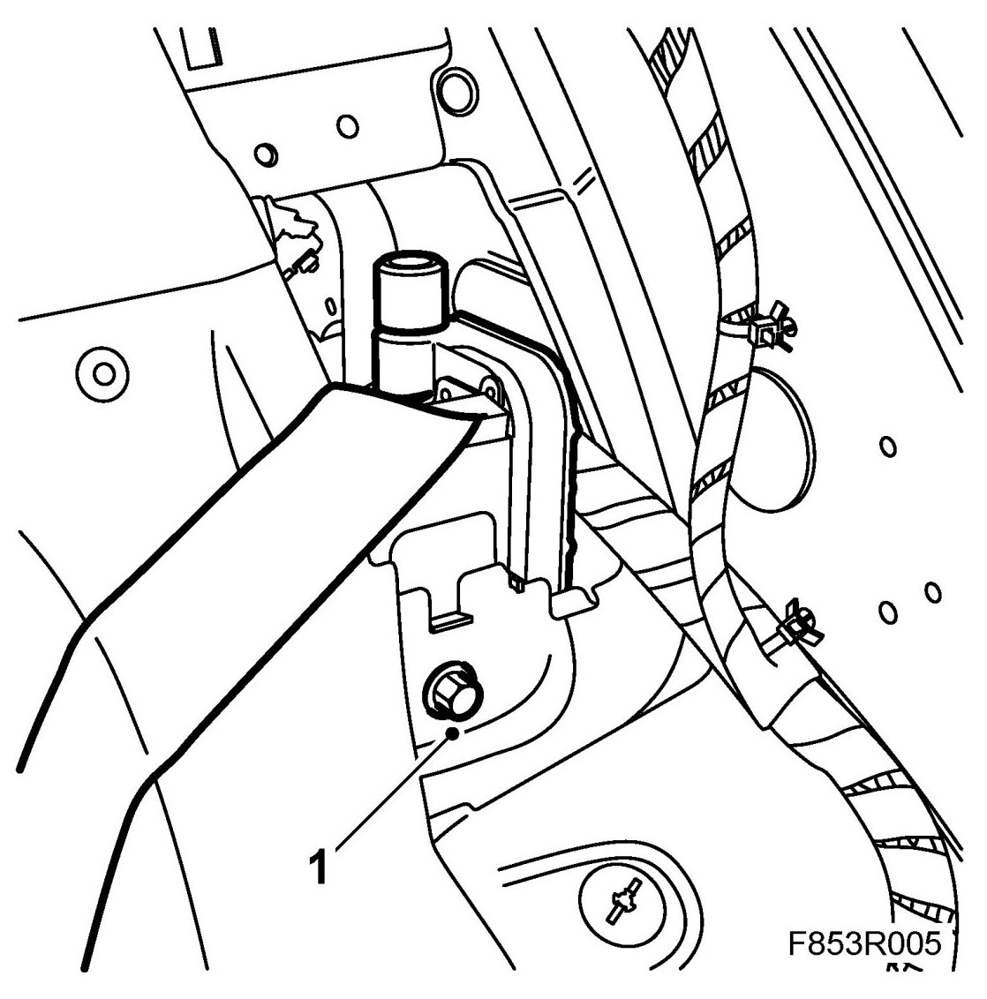
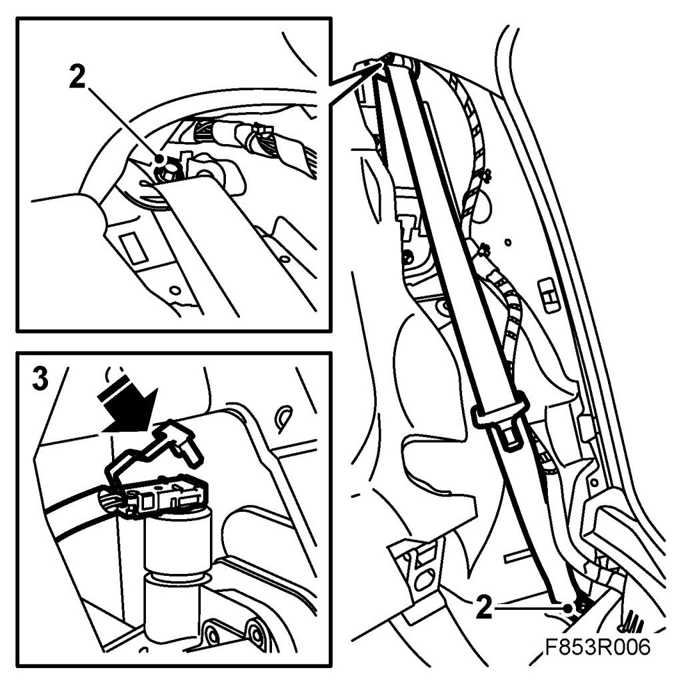
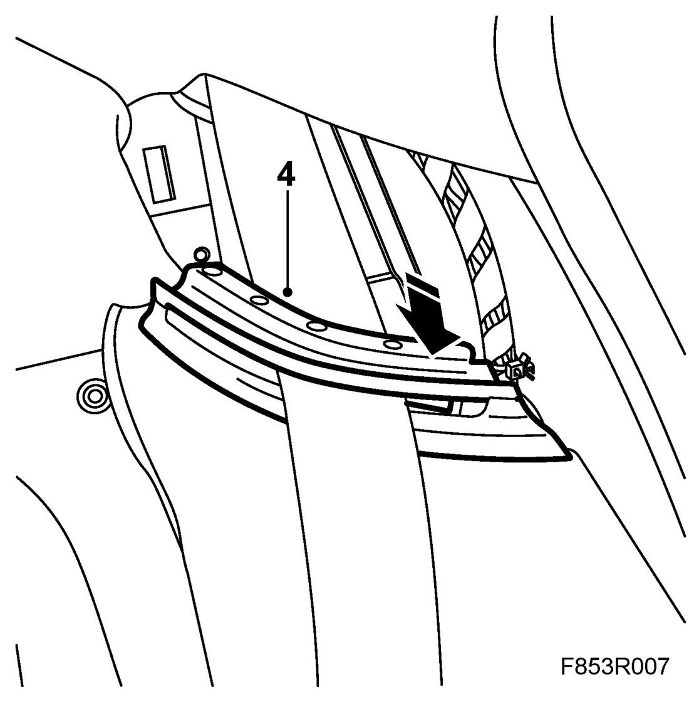
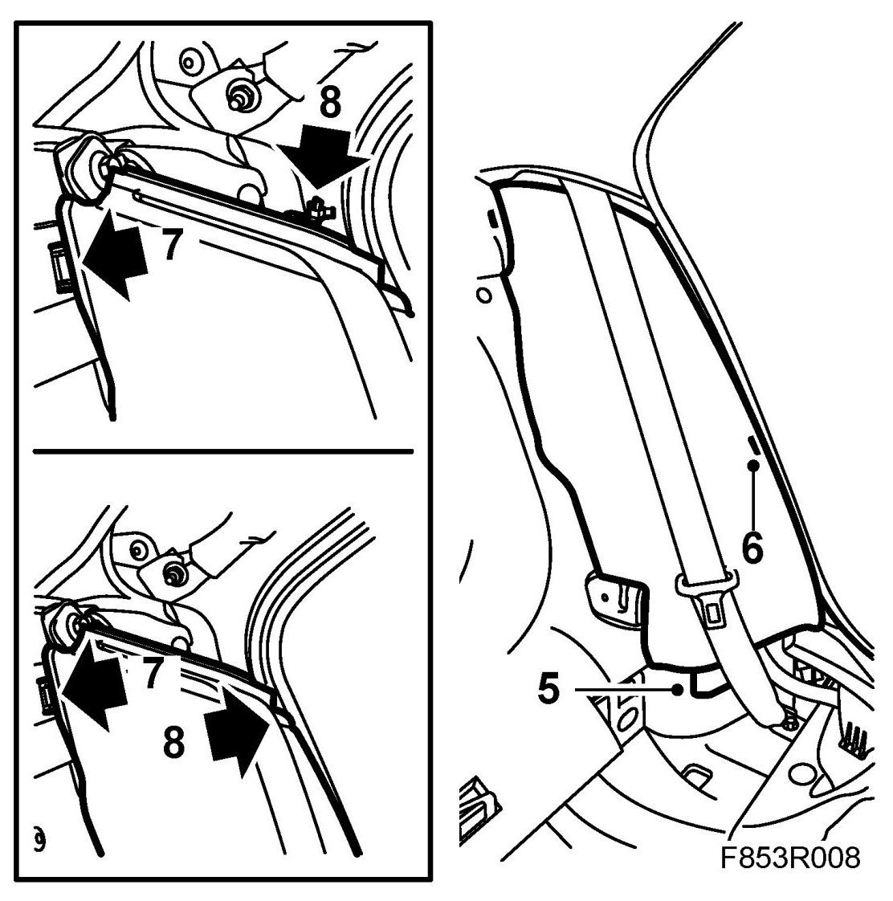

Rear Inertia Reel, 4D
Rear Inertia Reel, 4D
WARNING:
- An airbag system that can include an integrated seat belt tensioner comes as standard on the Saab 9-3.
- Work in accordance with the safety and handling instructions described in WebWIS group 8, Body - Airbag system - Technical description - Safety and handling instructions.
To remove
1. Cars with belt tensioner: Turn the ignition key to LOCK.
2. Remove the C-pillar trim.
3. Side bolster with cable tie: Cut off the cable tie.
Side bolster with clips: Remove the outer clip using 82 93 474 Removal tool.

4. Remove the side bolster inner clip so it comes loose from its fastening.
5. Press back the middle part of the bolster while pressing the bolster towards the middle of the car to unhook its middle fastener.
6. Unhook the lower bolster fastener.
7. Dismantle the top part of the seat belt guide.

8. Cars with belt tensioner: Open the rear piece on the inertia reel connector and remove the connector.

9. Dismantle the lower seat belt anchor point and the upper anchor point.
10. Dismantle the inertia reel and lift out the inertia reel.

To fit
1. Fit the inertia reel. Make sure the guide tab on the inertia reel comes in the right position.

Tightening torque 37 Nm (27 lbf ft)
2. Fit the belt's upper and lower anchor points. Check that the belt is not twisted.

Tightening torque 37 Nm (27 lbf ft)
3. Cars with belt tensioner: Connect the belt tensioner connector and close the rear piece.
4. Insert the seat belt through the seat belt guide on the bolster and fit the top part of the belt guide. Take care so the belt is not twisted.

5. Hook on the lower bolster fastening.

6. Insert the middle bolster fastener into its catch.
7. Fit the side bolster by pressing on the inner bolster clips.
8. Cars with cable tie: Fit a new cable tie.
Cars with clips: Fit the clip.
9. Check that the belt is positioned correctly and not twisted.
10. Check the operation of the seat belt.
11. Fit the C-pillar trim.
12. Cars with belt tensioner: Check the following with the diagnostic tool.
Connect the diagnostic tool to the data link connector under the dashboard. Delete any diagnostic trouble codes.
Turn the ignition OFF and then ON again. Wait at least 1 minute with the ignition on.
Check whether a diagnostic trouble code is shown:
If a diagnostic trouble code is shown:
Carry out fault diagnosis according to the instructions under respective trouble codes.
If a diagnostic trouble code is not shown:
The assembly was successful. Disconnect the diagnostic tool.